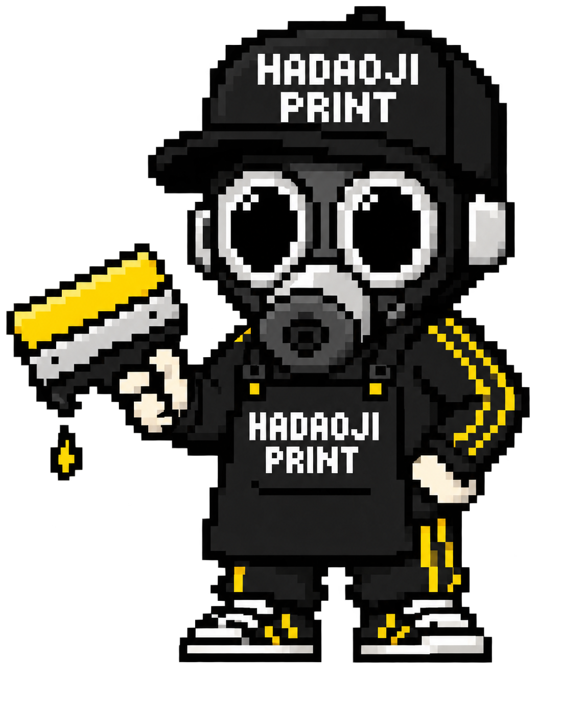

先に結論
HADAOJI PRINTの現在の価格ルールで、カラーTシャツ30枚に1色のシルクスクリーンプリントを入れる場合、片面なら税別38,600円が基本例です。1枚あたりに直すと約1,287円（税別）です。
1枚あたり約1,287円。カラーTシャツ、通常色、30枚、製版1版の例です。
1枚あたり約1,854円。前後それぞれの製版とプリントを含む例です。
※すべて税別。送料、大きいサイズ、特色、デザイン調整などは含みません。正式な金額は仕様確認後のお見積もりとなります。
片面1色・30枚の内訳
同じデザインを30枚プリントする場合は、シルクスクリーンが候補になります。製版代は最初に1回、ボディ代とプリント代は枚数分かかります。
21,600 ＋ 9,000 ＋ 8,000 ＝ 38,600円
製版代は枚数が増えても基本は同じ。だから、同じデザインなら枚数が増えるほど1枚あたりの製版負担が小さくなるよ。
前後両面・各1色なら
左胸と背中など、2か所に別々の版でプリントする場合の基本例です。
同じ色でも、プリント位置やデザインが異なれば別の版が必要です。サイズ・インク・素材によって追加料金が発生する場合があります。
料金が変わる6つの条件
綿Tシャツ、ドライTシャツ、厚手などで価格が変わります。
同じデザインをまとめるほど、1枚あたりが下がりやすくなります。
シルクは色ごとに版とプリント工程が増えます。
胸・背中・袖など、箇所が増えると加工費も増えます。
特色や大きなプリントは追加費用がかかる場合があります。
背景透過、描き直し、色分けなどが必要な場合があります。
写真や多色デザインはDTFが向く場合があります。DTFはプリントサイズやデザインによって金額が変わるため、画像を確認してからのお見積もりになります。
安く作る4つのコツ
プリント色を1色にまとめる
シルクスクリーンは色数を抑えると、版と工程を減らせます。
ウェアとデザインを統一する
同じ仕様でまとめると、制作の条件を整理しやすくなります。
加工箇所を絞る
まずは胸か背中の1か所にすると、価格を抑えられます。
必要枚数をまとめて注文する
後日少量を追加するより、必要数を最初に整理する方が効率的です。
見積もり前に決めること
枚数とサイズ内訳S・M・Lなどの予定数。未確定でも概算相談は可能です。
ウェアの種類と色綿、ドライ、長袖など、着用する場面も伝えます。
デザインと位置画像、希望する幅、胸・背中・袖などの場所を用意します。
希望納期使用日が決まっている場合は、最初に伝えましょう。
MISSION COMPLETE!
画像と枚数だけでも相談OK
仕様が決まっていなくても、予算と用途に合う方法を一緒に整理します。
30枚の見積もりを相談 ▶